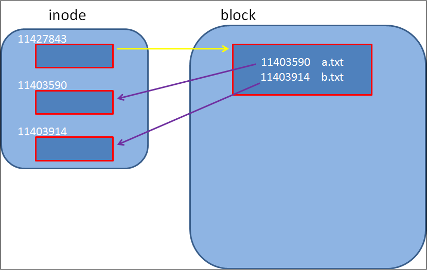

作者：jicanmeng
时间：2016年06月03日
在<<鸟哥的linux私房菜>>中提到：
目录的x代表的是使用者能否进入该目录成为工作目录的用途！除此之外，x权限还有其它的意思吗? 我们先看一个例子：
[jicanmeng@andy Desktop]$ ll -d xTest/
11427843 drwxrwxr-x. 2 jicanmeng jicanmeng 4096 May 21 22:32 xTest/
[jicanmeng@andy Desktop]$ ls -li xTest/
total 0
11403590 -rw-rw-r--. 1 jicanmeng jicanmeng 0 May 21 22:32 a.txt
11403914 -rw-rw-r--. 1 jicanmeng jicanmeng 0 May 21 22:45 b.txt
[jicanmeng@andy Desktop]$ chmod u-x xTest/
[jicanmeng@andy Desktop]$ ll -d xTest/
11427843 drwxrwxr-x. 2 jicanmeng jicanmeng 4096 May 21 22:32 xTest/
[jicanmeng@andy Desktop]$ ls -li xTest/
ls: cannot access rootTest/a.txt: Permission denied
total 0
? -????????? ? ? ? ? ? a.txt
? -????????? ? ? ? ? ? b.txt
[jicanmeng@andy Desktop]$ 为了回答这个问题，先看一张图。

对于一个文件，不管是普通文件还是目录文件，都会在文件系统中对应一个inode，和一个或多个block。inode中保存这个文件的相关的权限和属性等信息，而block中则包含了文件的内容。对于目录文件，对应的block中只包含了两项：目录中文件的名称和文件对应的inode的号码。上面操作中，目录的x权限禁止后，目录中a.txt和b.txt文件的属性都查看不了，这属性保存在编号为11403590和11403914的inode中，而且两个文件的inode的号码也显示不出来了。这下目录的x权限的作用应该清楚了，就是建立起目录文件对应的block到目录中各个文件的inode的映射关系。
再举个例子说明一下目录的x权限的意义。假设有一个/home/jicanmeng/Desktop/tmp/test/test.sh文件，如果执行的时候提示"Permisson denied"，你除了查看这个文件本身的权限是否设置正确之外，还要看一看这个文件的上级目录和上上级目录是否有x权限。举例如下：
[jicanmeng@andy Desktop]$ /home/jicanmeng/Desktop/tmp/test/test.sh /
hello, xTest
[jicanmeng@andy Desktop]$ chmod u-x tmp/
[jicanmeng@andy Desktop]$ /home/jicanmeng/Desktop/tmp/test/test.sh
bash: /home/jicanmeng/Desktop/tmp/test/test.sh: Permission denied
[jicanmeng@andy Desktop]$ 如果将tmp目录的x权限取消，那么tmp目录下面的所有文件的权限和属性信息都获取不了，test目录的的inode相关信息获取不了，就不能找到test目录对应的block，就不能找到test.sh对应的inode，就不能获得test.sh对应的block，从而无法执行这个文件。